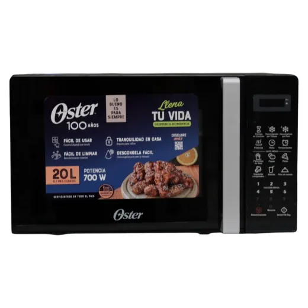
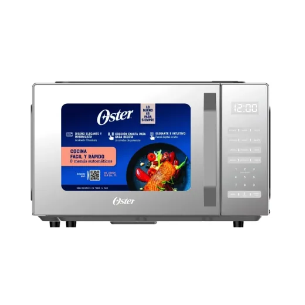
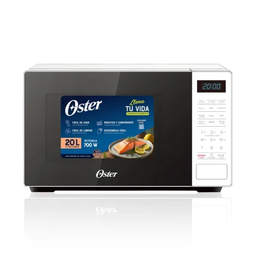
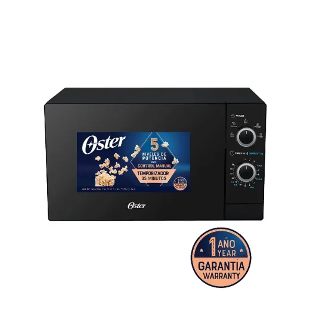
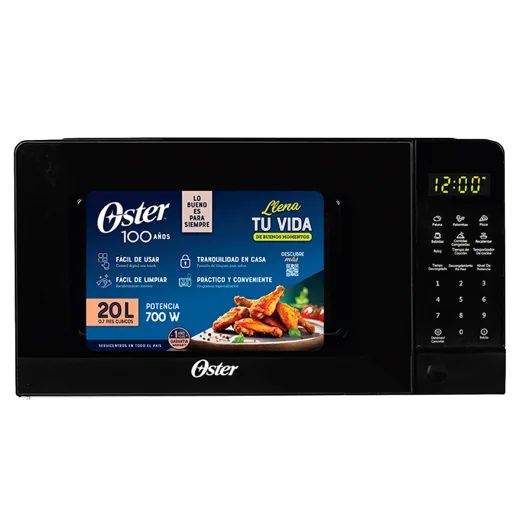
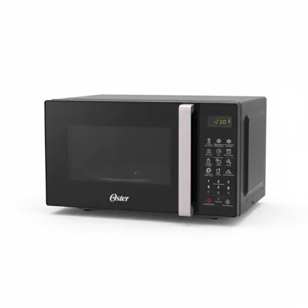
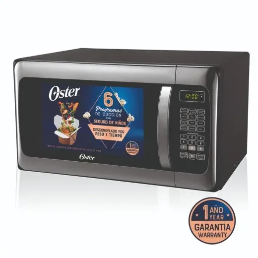
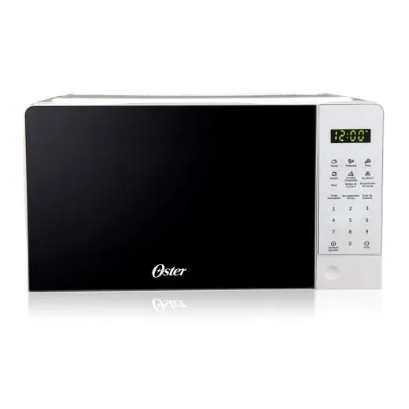
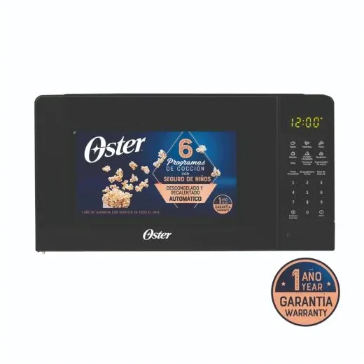

Oster · Modelo OGBM8702
Microondas Oster OGBM8702 negro 0.7 pies cúbicos 20 L
L 2,595
En Walmart
Precio en cada tienda
| Tienda | Precio | Antes | Disponibilidad | |
|---|---|---|---|---|
| Walmart | L 2,595 | Disponible | Ver en tienda › |
Precios referenciales tomados de cada tienda el 28 de noviembre de 2026. El precio válido es el que muestra la tienda al comprar.
Historial de precio
Lo seguimos desde el 1 de noviembre. Precio más bajo registrado: L 2,595 en Walmart (27 de noviembre), igual que hoy. Cambios de precio registrados: 1.
Características
| Color | Negro |
|---|---|
| Marca | Oster |
| Medida de altura | 26 cm |
| Medida de ancho | 45 cm |
| Medida de profundidad | 35 cm |
| Modelo o serie del producto | OGBM8702 |
| País de Origen - Ensamblaje | China |
| Material | Acero inoxidable y vidrio |
| Requiere ensamblaje | No |
| Voltaje | 120 V |
| Watts de potencia | 700 – 900 W |
| Cantidad de puertas | 1 puerta |
| Posee luz interior | Sí |
Descripción
El microondas Oster de 0.7 pies cúbicos combina potencia y practicidad. Su capacidad es ideal para calentar, descongelar o cocinar alimentos de forma rápida y uniforme. Incorpora múltiples niveles de potencia, temporizador digital y panel de control intuitivo para un uso sencillo. El acabado en color negro brinda elegancia y se adapta a cualquier cocina. Su interior espacioso y diseño compacto lo convierten en una solución funcional para el hogar moderno.Información del producto: La información de este producto es proporcionada por fabricantes y distribuidores. Te recomendamos verificar las especificaciones con el fabricante para obtener detalles más actualizados.
Otros microondas Oster

Microondas Oster de 0.9 pies cúbicos y capacidad de 25 LL 2,490En Walmart
Microondas Oster OGGME2701 de 7 pies cúbicosL 2,800En Walmart
Microondas Oster análogo de 0.7 pies cúbicos negro · OGM3702L 2,150En Walmart
Horno microondas Oster 0.7CP OGGE3702L 1,995En Gallo más Gallo
Microondas Oster OGBM2502 0.9 pies cúbicosL 3,295En Walmart
Microondas Digital 1.1' Acero/NegroL 3,299.01En Lady Lee
Microondas Digital Oster 0.7' Blanco – 700W con 6 Menús Automáticos · OGGE3701L 1,799En 2 tiendas · más barato en Lady Lee
Microondas Digital 0.7' NegroL 1,799En Lady Lee